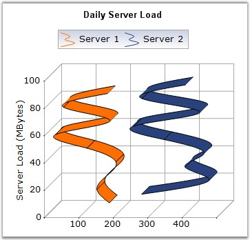

A Rotated Spline Chart is similar to an ordinary Spline Chart. The only difference is that it would be rotated. It plots one or several series of data, and joins each series by smooth, rotated spline curves instead of straight lines.
The following image shows a sample Rotated Spline Chart.

Figure 42: Chart displaying Rotated Spline Series
Chart Details
|
Details | |
|
Number of Y values per point |
1 |
|
Number of Series |
One or More. |
|
Cannot be Combined with |
Pie, Bar,Stacked Bar, Polar, Radar. |
Rotated Spline series can be added to the chart using the following code.
|
[C#]
// Create chart series and add data points into it. ChartSeries series1 = this.ChartWebControl1.Model.NewSeries(" Series 1",ChartSeriesType.RotatedSpline );
series1.Points.Add(1, 326); series1.Points.Add(2, 491); series1.Points.Add(3, 382); series1.Points.Add(4, 482);
// Add the series to the chart series collection. this.ChartWebControl1.Series.Add(series1); |
|
[VB.NET]
' Create chart series and add data points into it. Dim series1 As ChartSeries = Me.ChartWebControl1.Model.NewSeries(" Series 1",ChartSeriesType.RotatedSpline )
series1.Points.Add(1, 326) series1.Points.Add(2, 491) series1.Points.Add(3, 382) series1.Points.Add(4, 482)
' Add the series to the chart series collection. Me.ChartWebControl1.Series.Add(series1) |